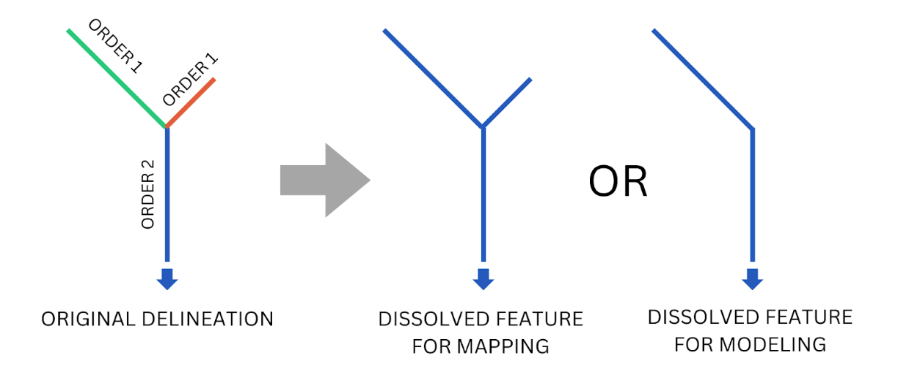
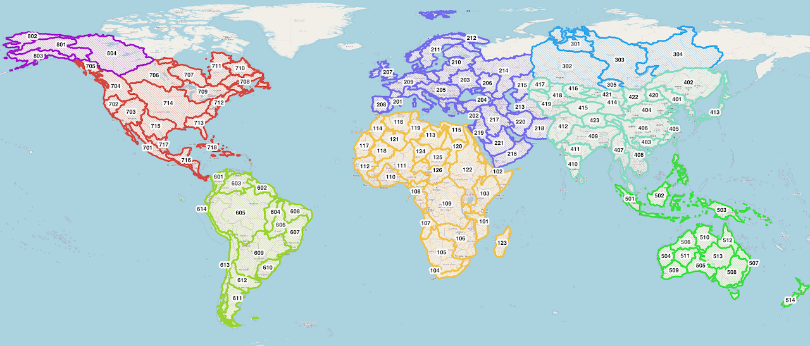

Termes et Vocabulaire
- Hydrographie : Jeux de données SIG des éléments hydrologiques tels que les cours d’eau, les points de confluence, les limites de bassins versants, les limites de lacs et autres caractéristiques.
- Hydrofabric : Hydrographie.
- TanDEM-X : Mission satellitaire SAR du Centre Aérospatial Allemand (DLR) et d’Airbus Defence and Space. Elle permet de produire un modèle numérique d’élévation à 12 mètres, le produit global le plus précis et détaillé de ce type. Il n’est pas disponible publiquement, mais les produits Copernicus Glo30 et FABDEM qui en sont dérivés le sont.
- TDX-Hydro : Jeu de données des lignes centrales des rivières et des limites de bassins versants produit par la National Geospatial Intelligence Agency en 2023. Les cours d’eau sont délimités à partir des données d’élévation TanDEM-X à 12 mètres en utilisant TauDEM avec un post-traitement étendu pour corriger la localisation des lignes centrales et préparer les élévations.
- TauDEM : Outil d’analyse de terrain utilisé pour délimiter les cours d’eau et bassins à partir des données d’élévation.
- VPU : Vector Processing Unit. Groupe de 1 ou plusieurs bassins complets regroupés pour créer des sous-ensembles du jeu de données hydrographique global, facilitant la distribution des données, le calcul et la création de cartes.
- River ID : Identifiant unique pour chaque ligne centrale de cours d’eau dans le jeu de données hydrographique RFS. Les logiciels SIG et hydrologiques ont souvent des noms différents pour cet identifiant. Par exemple, TauDEM et TDX-Hydro utilisent "link number" (LINKNO) et les logiciels Esri utilisent "common identifier" (COMID). Dans le RFS, on parle de River ID. Tout terme tel que LINKNO, COMID, ReachID, StreamID, RiverID ou similaire doit être compris comme équivalent.
- Ordre de Strahler : Nombre utilisé pour classer les rivières topologiquement. Les plus petits cours d’eau sont de l’ordre 1 et lorsque deux cours d’eau d’ordre 1 se rejoignent, ils forment un cours d’eau d’ordre 2, et ainsi de suite. Dans TDX-Hydro, l’ordre le plus élevé est 9.
Aperçu
L’hydrographie RFS est une modification du jeu de données TDX-Hydro sur les cours d’eau et bassins. Elle provient de données d’élévation propriétaires TanDEM-X à 12 m. Vous pouvez télécharger le jeu complet et consulter le document technique décrivant sa création à l’adresse https://earth-info.nga.mil/ sous l’onglet "Geosciences".
Le jeu complet TDX-Hydro contient environ 16 millions de segments de rivières et couvre le globe en 62 morceaux correspondant au niveau 2 de HydroBASINS. Nous avons exclu 12 régions représentant des îles ou des zones plus au nord. De plus, de nombreuses révisions ont réduit le nombre de cours d’eau pour optimiser le réseau pour le routage des canaux, ramenant le total à 6,25 millions de rivières. Cette version utilisée dans RFS est disponible pour téléchargement et usage par les utilisateurs. Ce jeu est appelé hydrographie, hydrofabric ou réseau de rivières. Il s’agit de données vectorielles avec points et lignes coordonnées, et non de données en grille, et comprend quatre composants principaux :
- Les lignes centrales exactes des cours d’eau utilisées dans RFS. Chaque cours d’eau a un identifiant unique à 9 chiffres appelé reachID, link number ou stream ID. C’est le fichier "streams_{vpu}.gpkg".
- Les limites de bassins utilisées dans RFS. Ce sont les limites autour de chaque ligne centrale, représentant la zone connectée à cette ligne. Elles sont identifiées avec le même link number que la ligne centrale correspondante. C’est le fichier "catchments_{vpu}.spatialite". Chaque ligne centrale correspond exactement à une limite unique.
- Les points de connexion utilisés dans RFS où différentes lignes centrales se rejoignent. Chaque point a un attribut DSLINKNO représentant le link number en aval. Il a aussi un attribut USLINKNOs, une liste séparée par des virgules des link numbers en amont du point de jonction. C’est le fichier "nexus_{vpu}.gpkg".
- Les bassins de lacs fusionnés utilisés dans RFS pour représenter les lacs. Les bassins identifiés comme faisant partie d’un lac ont été fusionnés pour représenter les lacs. La forme peut différer de la limite réelle du lac. C’est le fichier "lakes_{vpu}.gpkg".
Modifications apportées à TDX-Hydro
Toutes les modifications effectuées sur chaque région TDX-Hydro sont enregistrées dans trois fichiers : 1) processing_options.xlsx, 2) tdx_header_numbers.json et 3) terminal_node_vpu_list.csv.
Le fichier JSON des numéros d’en-tête TDX associe chaque région TDX-Hydro à un numéro unique à 2 chiffres. Le CSV des nœuds terminaux associe chaque nœud terminal (id de la sortie d’un bassin) à un numéro VPU.
Les régions exclues comprennent celles situées plus au nord et certaines petites îles, où les données de débit sont moins précises et la population plus rare. Les versions futures pourraient réintroduire ces régions. De plus, nous avons corrigé des erreurs dans le jeu TDX-Hydro signalées à la NGA. Ces erreurs comprennent :
- Cours d’eau sans longueur ni segments amont/aval, i.e., deux points identiques. Ces rivières et leurs bassins ont été supprimés.
- Cours d’eau sans longueur mais avec segments amont ou aval. Ces rivières et bassins associés ont été supprimés, et les attributs des segments voisins ont été mis à jour pour préserver la connectivité.
- Bassins avec un identifiant '0' sans cours d’eau associé. Supprimés.
Pour la plupart des régions, les têtes de cours ont été fusionnées avec les segments en aval jusqu’au segment avec un ordre Strahler de 2 ou 3. Les régions côtières (Japon, Caraïbes, Indonésie) n’ont pas été modifiées. D’autres zones, comme le désert du Sahara, ont été délimitées avec une haute résolution, permettant la fusion de plus de fonctionnalités sans altérer le routage. Les attributs tels que longueur et pente ont été recalculés après fusion.

Les petits bassins jusqu’à 200 km² ont été supprimés pour toutes les régions. Les régions côtières ont vu des bassins de 25 à 75 km² supprimés, d’autres zones comme le Sahara ou le nord du Canada ont supprimé des bassins de 200 km². Ces petites zones représentent souvent des accumulations d’eau qui ne se déversent pas à l’océan.
Les têtes de cours se jetant directement dans des cours d’eau d’ordre Strahler 2 ou plus ont été fusionnées avec le segment en aval immédiat pour la plupart des régions.
VPUs
Les données SIG sont divisées en 125 morceaux plus petits, les VPUs, facilitant la gestion et l’accès aux données. Chaque VPU représente un ou plusieurs bassins complets.

Les limites VPU sont également disponibles pour téléchargement afin d’identifier la VPU d’intérêt. Les autres jeux SIG doivent être téléchargés selon la VPU concernée et contiennent l’intégralité de la VPU.
Métadonnées disponibles
Les flux V2 ont les attributs suivants provenant du processus de délimitation TauDEM. Pour plus de détails, voir Documentation TauDEM.
| Attribut | Source | Description |
|---|---|---|
| LINKNO | TDX-Hydro | Identifiant unique à 9 chiffres pour le cours d’eau. |
| DSLINKNO | TDX-Hydro | Identifiant (LINKNO) du cours d’eau immédiatement en aval. |
| strmOrder | TDX-Hydro | Ordre de Strahler du cours d’eau. |
| USContArea | TDX-Hydro | Surface totale du bassin en amont du point le plus en amont. |
| DSContArea | TDX-Hydro | Surface totale du bassin en amont du point le plus en aval. |
| LengthGeodesicMeters | RFS V2 | Longueur géodésique des arcs de rivière en mètres. |
| TDXHydroRegion | RFS V2 | Numéro du groupe régional TDX dont fait partie ce cours d’eau. |
| TopologicalOrder | RFS V2 | Ordre des cours d’eau du début à l’exutoire. |
| Musk_k | RFS V2 | Paramètre Muskingum k initial calculé pour le routage fluvial. |
| Musk_x | RFS V2 | Paramètre Muskingum x initial calculé pour le routage fluvial. |
| TerminalLink | RFS V2 | Identifiant de l’exutoire final du bassin du cours d’eau. |
| VPUCode | RFS V2 | Numéro à trois chiffres représentant la VPU RFS de ce cours d’eau. |